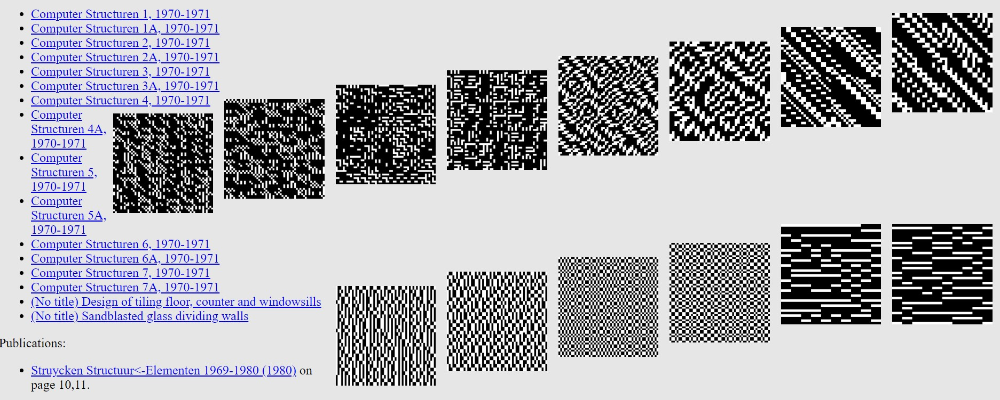

Exhibition Overview
This exhibition, "Interactions and Interfaces: The Dawn of Digital Art", invites audiences to explore the foundational moments of digital art from the late 20th century. Focusing on the works that blurred the boundaries between technology and art, this show gets into the creative and technical aspects of how artists were able to utilize things such as computers and codes to create art. Through a selection of pieces, I want this exhibition to highlight the evolution of digital art just as how it started. Each work represents essentially a capsule of time as they all represent what an artist can do with a newfound medium. As visitors navigate through the digital landscapes crafted by these artists, they engage with the historical contexts and technological innovations that have now shaped the trajectory of contemporary digital art.
Featured Artworks
The Senster (1968-1970) by Edward Ihnatowicz
A pioneering robotic sculpture, The Senster was one of the first computer-controlled artworks that interacted with its environment. Created for the Philips' Evoluon exhibition space, this piece responded to sound and movement, engaging directly with spectators. Its technical complexity and interactive capabilities marked a significant milestone in the evolution of digital and robotic art.
View More
Points of View (1983) by Jeffrey Shaw
Jeffrey Shaw's interactive installation, Points of View, represented an exploration of participatory art through digital means. Utilizing custom software and hardware, Shaw created a virtual space navigated by audience control, pioneering immersive and interactive digital art.
View More
Computerstructuren (1969-1972) by Peter Struycken

Peter Struycken’s Computerstructuren series is a landmark in the field of generative art, where algorithms and chance operations determined the outcome. These works kind of show the shift from artist-as-maker to artist-as-conceiver, highlighting the collaborative process between creator and computer in the production of art.
View More